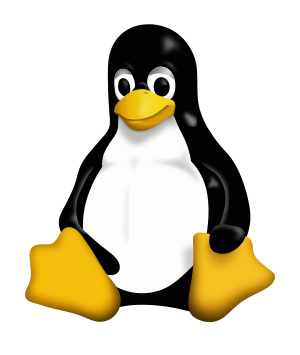
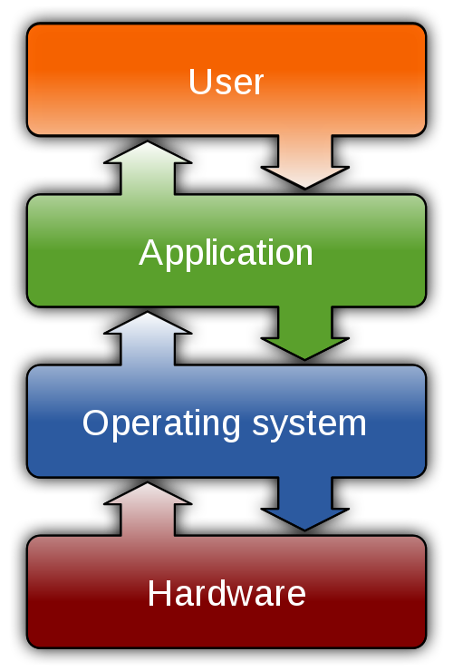
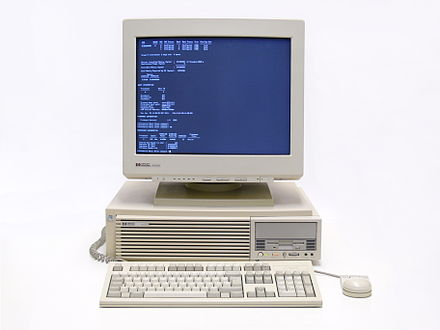
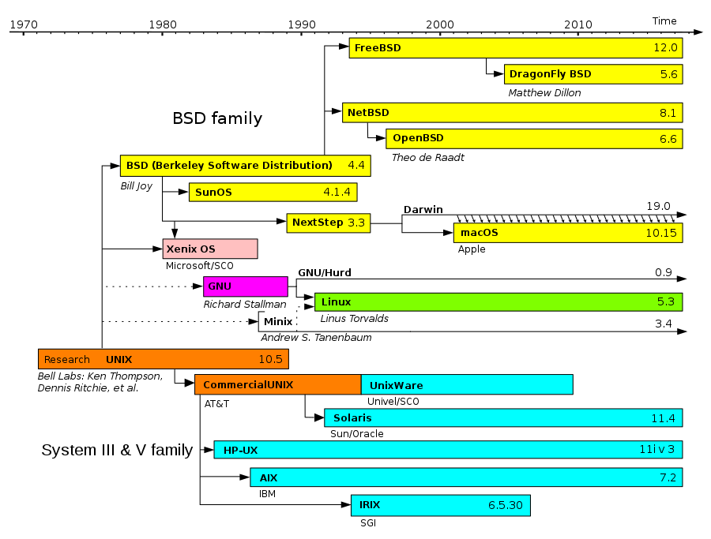
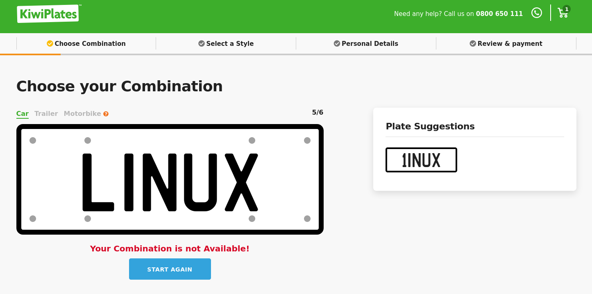

class: center, middle, inverse # Welcome to Linux ## Freedom, community, openness and choices Eleni and Rohit .red.bold[today's date] --- layout: true class: inverse, middle --- # Outline - What is Linux? - Why does it exist? <hr /> - What is Open Source technology? - Why should you consider using Linux or Open Source? <hr /> - Is it a viable substitute? - Can it be tried non-invasively? --- class: middle .left-column[ # The Cast  ] .right-column[ | | | :-------- | | <img src="../images/linux-presentation/Linus.jpeg" /> | | Linus Torvalds <audio controls> <source src="https://upload.wikimedia.org/wikipedia/commons/0/03/Linus-linux.ogg" type="audio/ogg"> </audio> | | Universities and Scientists | | Large Corporations | | Mathematicians and Engineers| | Hobbyists and 'Hackers' | | The average user | ] --- class: center # Demonstration of use --- .left-column[ ## What is it? ] .right-column[ Linux is an **operating system**. It is software that enables applications and the user to access devices (mouse, printer, filesystem, network, etc.). ] --- .left-column[ # Road System ] .right-column[ People can build private roads within their property, but they still need to: - Connect these to the shared road network. - Agree on a road code. - Agree on a method to enforce rules. The road code and its enforcement is analogous to an operating system. ] --- .left-column[ # Baking Cake ] .right-column[ <!-- - Ingredients --> <!-- - Directions --> 1a. Preheat oven to 180 °C. 1b. Grease and flour baking pans. 1c. Beat butter and sugar until fluffy. 2c. Combine flour and baking powder in a bowl. Pour mixture into the batter. 3a. Bake in preheated oven, 30 to 35 minutes. A chef in the kitchen is analogous to the operating system, translating the abstractions into particulars as needed. ] --- .left-column[ ## What is an OS? ] .right-column[ An operating system (OS) is system software that manages computer hardware, software resources, and provides common services for computer programs. .center[] ] --- .left-column[ ## What computers need an OS? ] .right-column[ - Personal computing devices, such as laptops, smart phones (Android) etc. - Supercomputers found in academic and corporate labs (AWS, cloud infrastructure). - Much of the internet infrastructure (network routers, switches, mail servers). - Smart-home devices, televisions, automobiles, electronic sensors, etc. .footnote[We use Linux on all our computing devices.] ] --- # An OS is also software <!-- - It is described similar to the baking recipe, except that it must take responsibility for everything directly. --> - That means that the chef in our kitchen is also a recipe, one that can execute itself and must take responsibility for everything directly > - Directions > > 1a. Preheat oven to 180 °C. > > 1c. Beat butter and sugar until fluffy. > > 2c. Combine flour and baking powder in a bowl. Pour mixture into the batter. > > ... --- .left-column[ ## The OS software ] .right-column[ - Is one of the most complex pieces of software running on a computer. - Has strong requirements for efficiency and security. - Needs to work reliably across a variety of machines. - Takes years to mature. ] --- class: middle, center ## II --- # Unix - UnIcs: Uniplexed Information and Computing Service - Family of operating systems. - Created to manage large computers. - It was born around 1969. - Collaboration between academics and corporations. .center[<img src="../images/linux-presentation/PDP-11.jpeg" />] --- class: middle .left-column[ # UNIX offered ] .right-column[ - software sharing at a nominal fee for educational use. - adaptability and portability to different machines. - a simple, elegant, extensible design - hierarchical filesystem - a uniform interface (evertthing is a stream of bytes) - a modular architecture ] --- # Modular Design <iframe width="560" height="315" src="https://www.youtube.com/embed/SR3aIzfNMXM?start=99&end=205" frameborder="0" allow="autoplay; encrypted-media" allowfullscreen></iframe> <!-- Simplified abstractions and interfaces encouraged users to introduce new tools and combine them innovatively to create modular solutions. --> --- # Modular Design The most common word in Leo Tolstoy's War and Peace -- : > read-file | split-words | histogram | sort | take-first -- The most common _French_ word in Leo Tolstoy's War and Peace: > read-file | split-words | take-french | histogram | sort | take-first <!-- -- -- ----> <!-- -- Unix enables creating modular chains of producer-consumer processes, which makes for a powerful programming paradigm. ----> --- # More than just an OS Early Unix developers were highly skilled mathematicians, engineers and in a sense even philosophers. - Unix established a set of cultural norms for developing software - modularity - reusability These norms have become as important and influential as the technology of Unix itself. --- # Other Operating Systems - The dominant desktop operating system is Windows - owned by Microsoft - 1985 - growing interest in graphical user interfaces - graphical operating system shell for MS-DOS - second in populairy comes macOS, - owned by Apple - 1984 - series of graphical operating systems - evolved out of UNIX - The varieties of Linux are collectively in third place. - 1991 - a version of UNIX for PC --- .left-column[ ## History of Linux ] .right-column[ - In the 80's: - improvements in technology - affordable computers - proliferation of personal computing. .center[] - UNIX was shared amongst universities and large companies. - License restrictions. - Need to create an operating system for the personal computer. ] --- .left-column[ ## History of Linux ] .right-column[ - Linux began in 1991 - personal project by a Finnish student Linus Torvalds - to create a UNIX clone for the Intel micro-processors - The Linux today is the result of efforts from Linus Torvalds and thousands of other individuals. ] --- class: normal .left-column[ # UNIX timeline ] .right-column[  ] --- # Initial days of Linux - for a long time, Linux was popular only amongst hobbyists - text based interface .center[<img src="../images/linux-presentation/textInterface.png" width="40%" />] - took off seriously in the mid 1990s - NASA - suprecomputing community - affordable solution - commercial use began when Dell and IBM, started offering Linux support to escape the monopoly of Microsoft. --- class: middle, center ## III <img src="../images/linux-presentation/liveFree.jpeg" /> Linus Torvalds had wanted to call his invention "Freax", a portmanteau of "free", "freak", and "x" (as an allusion to Unix) --- # Free Software Not to be confused with Freeware. Free software is computer software distributed under terms that allow users: - The freedom to run the program for any purpose (freedom 0). - The freedom to study how the program works, and change it (freedom 1). - Access to the source code is a precondition for this. - The freedom to redistribute copies so you can help your neighbour (freedom 2). - The freedom to distribute copies of your modified versions to others (freedom 3). Free software is a matter of liberty, not price! <!-- -- all users are legally free to do what they want with their copies of a free software (including profiting from them) regardless of how much is paid to obtain the program. ----> --- # Practical Demonstration of Open Source 1. someone puts up a project on the internet 1. someone else notices the potential for an improvement. 1. the collaborator makes a change using a copy of the code 1. the collaborator submits the change as a request to merge work 1. the original author, or anyone else with privileges, reviews the submitted work and eventually accepts it. --- # Open Source and the GNU Project - UNIX was developed and shared freely amongst the early users - Slowly, license restrictions crept in to control freedoms. .center[<img src="../images/linux-presentation/Richard_Stallman_2019.jpeg" width="30%" />] - Richard Stallman starting the free-software movement in 1983 - GNU Project - a collaborative effort to create a freedom-respecting operating system - to revive the spirit of cooperation once prevalent among hackers. --- # Copyleft - A legal mechanism to protect the rights for free software. - Right to freely distribute and modify intellectual property. - The same rights are preserved in derivative works created from that property. - Information for reproducing and modifying the work is available, commonly as source code. --- # Motivations for Free Software Developers First example in history where humans across the globe - collaborated to successfully to create solutions. - without central oversight or monetary incentive. - and the solutions have excelled in quality. What is the motivation? - work fills some particular need - respect of peers - sense of contribution and community - boost skills and resume --- # Linux as free software Linux comprises: - a core piece, called the kernel (originating from Linus Torvalds) - GNU tools and libraries - additional software - documentation - and a graphical desktop environment. Most of the included software is free and open-source software. <!-- -- made available both as compiled binaries and in source code form, allowing modifications to the original software. ----> --- # Linux as free software - Linux kernel is licensed under the GNU General Public License (GPL), version 2. - any software using the kernel must make the original source code and any modifications available to the recipient - the same terms apply to the recipient. - GPL has been incorrectly called a 'virus'. - Richard Stallman responded this view with an analogy: - "The GPL's domain does not spread by proximity or contact, - only by deliberate inclusion of GPL-covered code in your program." --- # Disadvantages of non-free platforms - platform lock-in - no way to study or modify solutions without vendor participation - solutions tend to be non-modular, complicated, and expensive - no oversight - leads to duplication of human effort .footnote[Note: these is a matter of opinion] --- class: middle, center ## IV  The customized license plate for "FREAX" is available. :) --- # Linux Today - Linux is used throughout computing, from embedded systems to virtually all supercomputers. - It is supported by big names, such as IBM, Google, Sun, Oracle, Dell and many more. - Customised Linux distributions have also become popular in the netbook market. <!-- -- with many devices shipping with customised Linux distributions installed, and Google releasing their own Chrome OS designed for netbooks. ----> - The greatest success is perhaps the mobile device market, with Android operating systems on smartphones, tablets and wearables. - Linux gaming is also on the rise. - Linux distributions have also gained popularity with various local and national governments. --- # Linux Distributions - Linus Torvalds distributed the first version of Linux as source code only, and later as a pair of downloadable floppy disk images. - The installation procedure was complicated and distributions sprang up to simplify this. - Linux users usually obtain their operating system by downloading one of the Linux distributions. - A Linux distribution is essentially a particular assortment of applications and utility software packaged together with the Linux kernel. - Distributions are normally segmented into packages. Each package contains a specific application or service. - Packages can be installed or removed using a package manager, which simplifies dependency management. --- # Suggested Linux Distribution Among the widely used GNU-based distributions, we suggest: - Debian, a non-commercial distribution and one of the earliest, maintained by a volunteer developer community. <!-- -- with a strong commitment to free software principles and democratic project management. ----> - Ubuntu, a desktop and server distribution derived from Debian, maintained by the British company Canonical Ltd. Other popular distributions include RedHat, Fedora, and SuSE --- # Benefits of Using Linux - Linux systems are extremely stable. - Free; no need to pay for licenses. - Persistent high performance. - Reliable security; near absence of viruses - Low resource requirements, hence less expensive systems. - Continues to work well even after the disk gets completely full; Linux never gets slow. - Large number of organizations support it. - Graphical interface, user-Friendly installation, and equivalents for most applications. --- # False Myths about Linux - Too difficult for ordinary people to use. - Less secure because the source code is available to anybody. - Most jobs require Microsoft, so why bother. - Linux is free, therefore, there is no way for businesses to make money from it. - Linux is a type of software piracy, because much was copied from other operating systems. --- class: middle, center ## V --- class: middle # Rohit's initial use of Linux - Experiment with software design and operating systems. - Study software and modify it to suit needs. - In many cases, Linux would not run smoothly - spent significant amounts of time tweaking things to get them to work. It was all great fun, but somewhat frustrating. --- class: middle # Eleni's initial use of Linux - Writing documents. - Browsing the internet. - Learning how to code. - If I need help, I ask my husband, but there is also the community. --- # Applications supported by Linux - Word processor - Browser - Spreadsheet - Presentation <!-- -- - Database ----> - Drawing - Audio, Sound-mixing --- # Searching/installing a new application --- class: middle, center ## VI --- # Trying Ubuntu in a Virtual Machine ---